01តម្រួត · The swallowed beatតម្រួត
«កន្លែង» place។ «ន» តូចនៅក្រោម «ក» ព្យាង្គដើមអានខ្លី k-។
កន្លែង “place”: the first beat shrinks to a bare k-.
Reduced syllables I — the coeng ្ · មេរៀនទី ៦ · Lesson 6 of ភាសាខ្មែរ កម្រិត ១
ពាក្យមួយចំនួនមាន «ជើងតូច» (្) នៅកណ្តាល។ ព្យាង្គទីមួយបាត់ស្រៈ អានខ្លីៗ ដូចជា «កន្លែង» k-nlaeng។
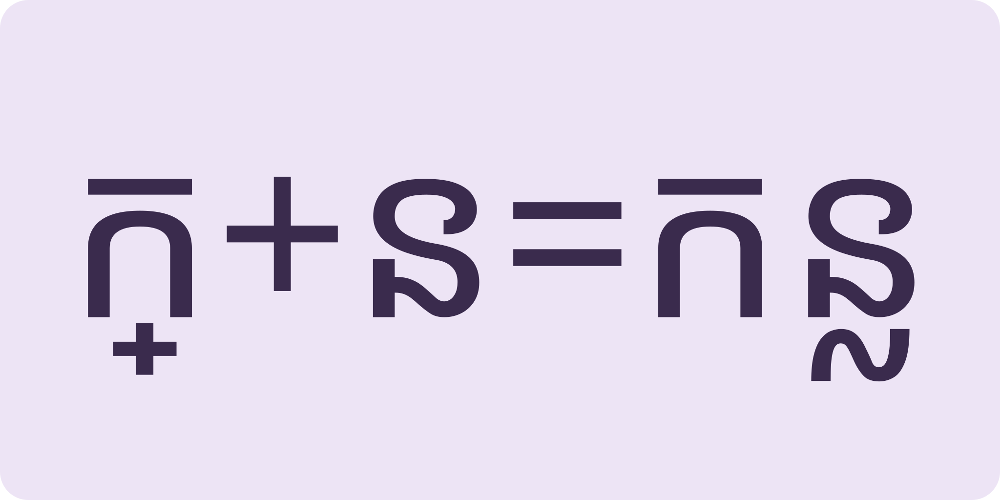
ព្យាង្គទីមួយខ្លីFirst beat shrinks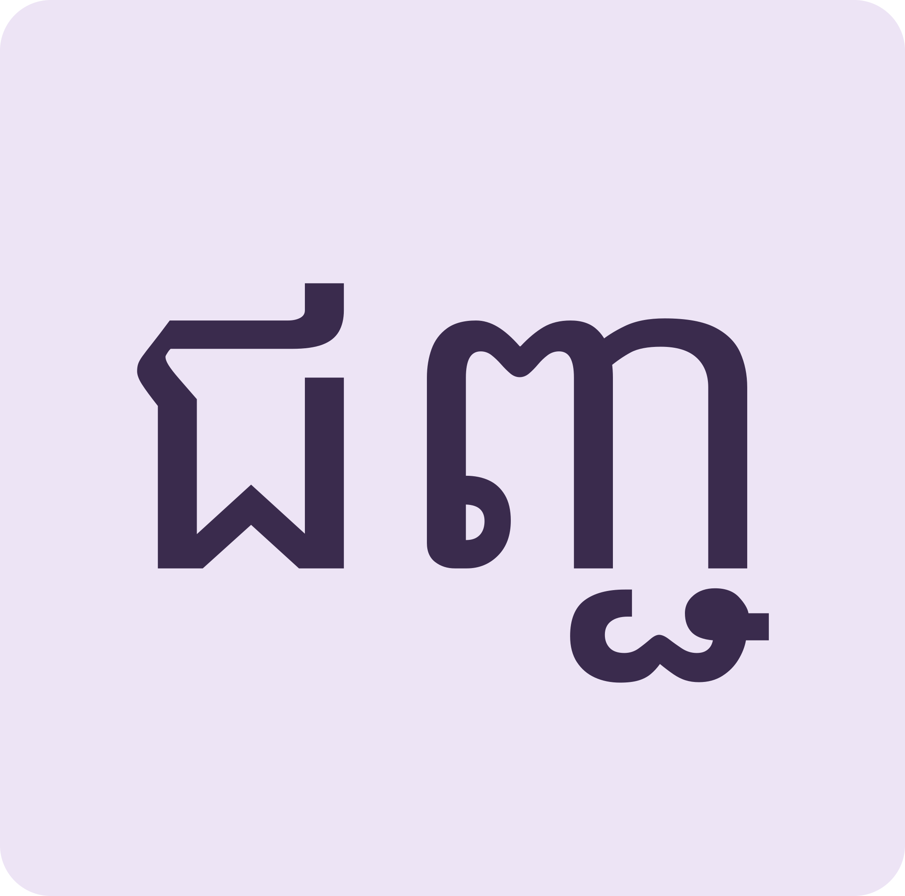
ជើងស្ទួនDoubled subscripts like ញ្ជ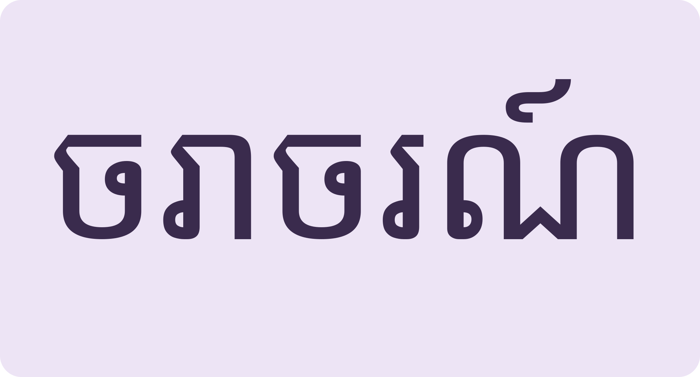
ពាក្យផ្លូវធំBig road words use it tooHear the swallowed vowel, read village words with ្, then road-safety language.
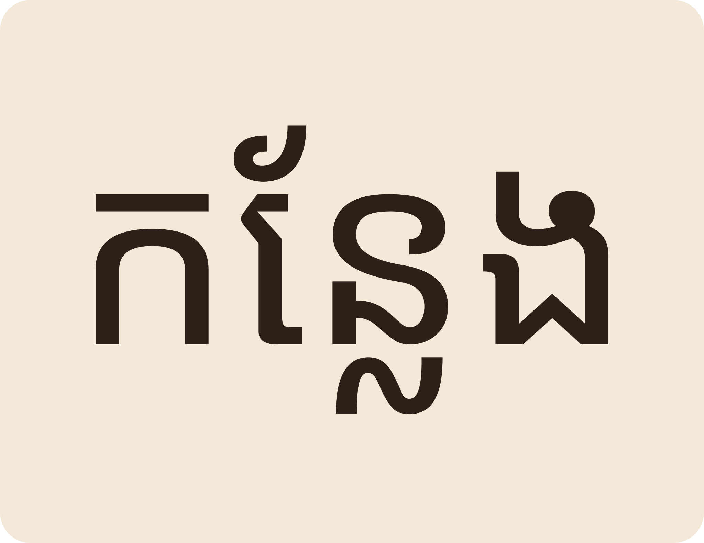
Space listen · ← → move · K show text
«កន្លែង» place។ «ន» តូចនៅក្រោម «ក» ព្យាង្គដើមអានខ្លី k-។
កន្លែង “place”: the first beat shrinks to a bare k-.
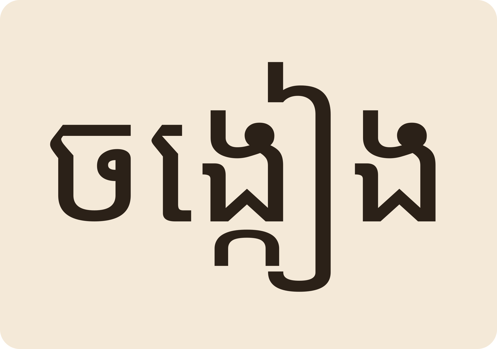
«ចង្កៀង» oil lamp។ អាន chɑng-ieng ព្យាង្គដើមស្រាល។
ចង្កៀង “oil lamp” — light first beat, strong second.
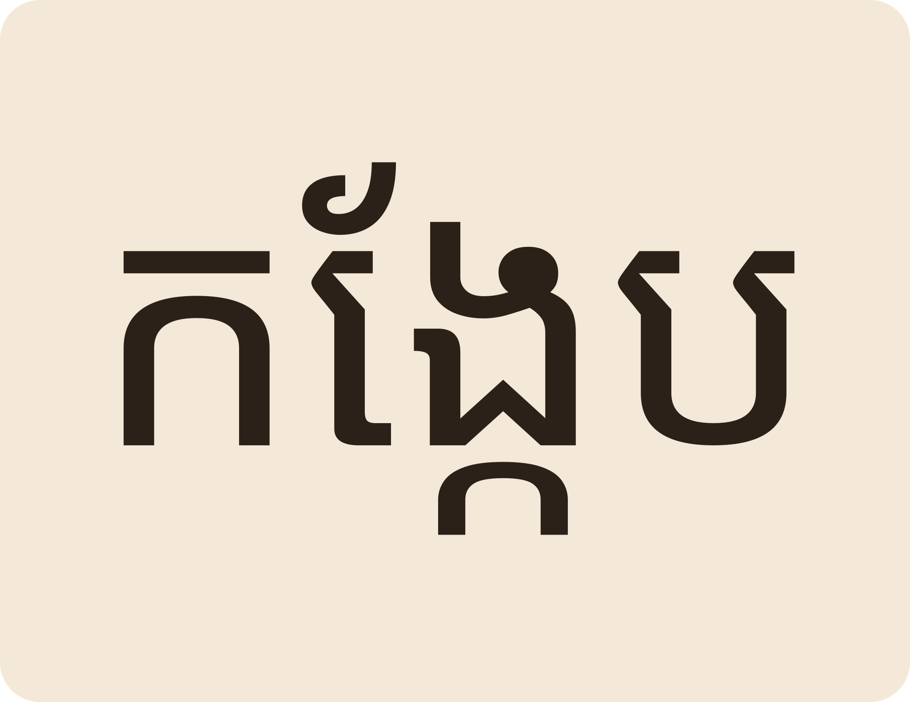
«កង្កែប» frog។ «មីងខែយកជញ្ជីងថ្លឹងកង្កែបលក់នៅផ្សារ»។
កង្កែប “frog”. Aunti Kae weighs frogs on a scale at the market.
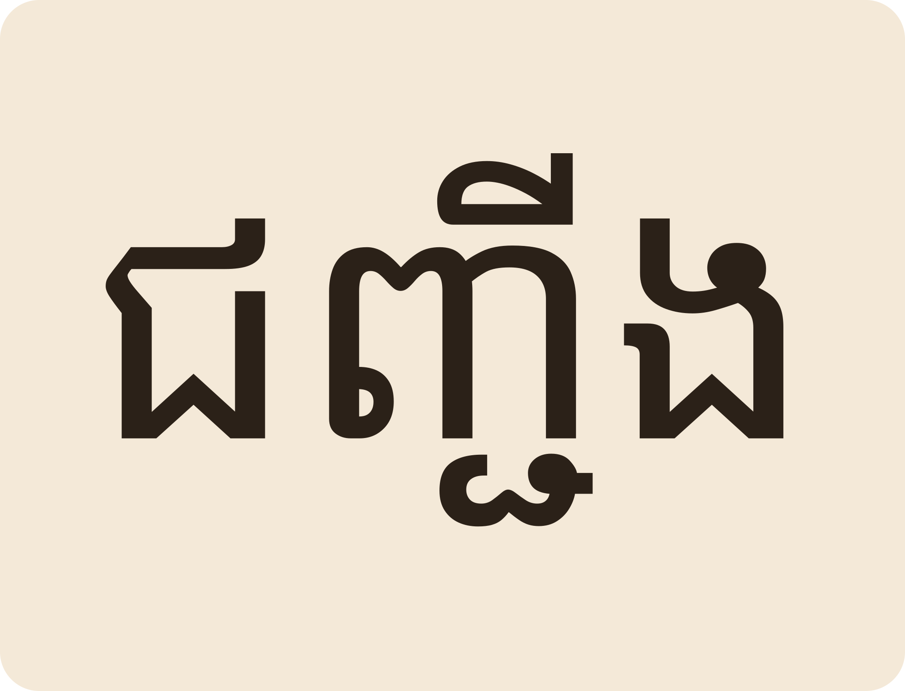
«ជញ្ជីង» scale។ ជើងពីរ «ញ» និង «ជ» តម្រួតព្យាង្គដើម។
ជញ្ជីង “scale” — TWO stacked subscripts shrink the first beat.
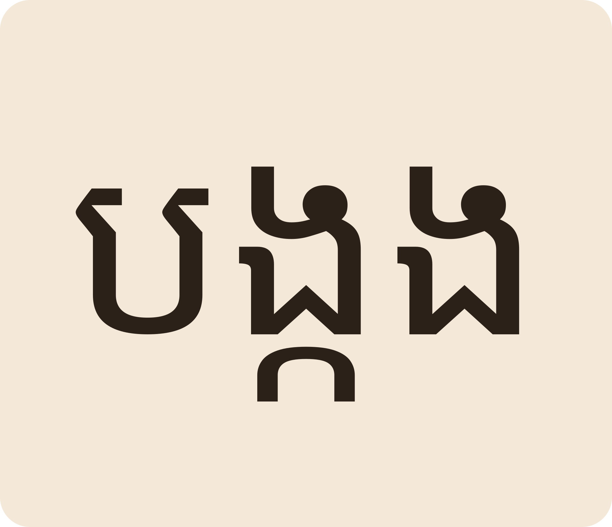
«បង្កង» prawn។ «ចែថាទិញបង្កង និងបង្គាយកទៅអាំង»។
បង្កង “prawn”. Auntie buys prawns and shrimp to grill.
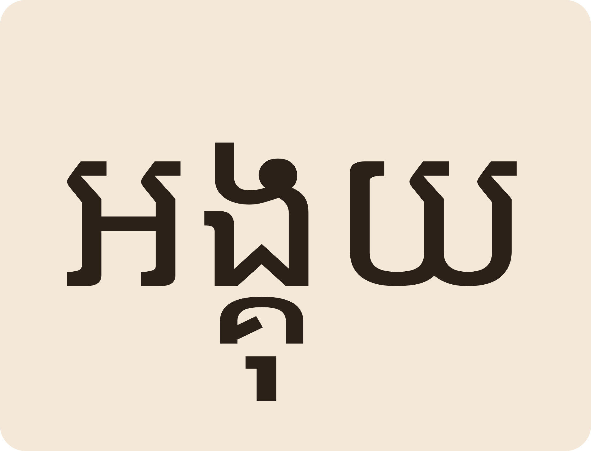
«អង្គុយ» to sit (polite)។ អង្គុយស្តាប់គ្រូក្នុងថ្នាក់។
អង្គុយ “to sit” (polite). Sit and listen to the teacher.
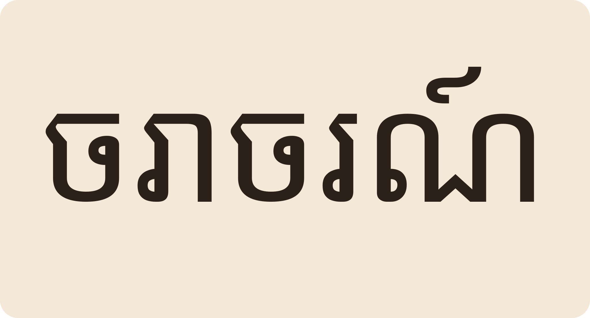
«ចរាចរណ៍» traffic។ ការធ្វើដំណើរទៅមកតាមផ្លូវ។
ចរាចរណ៍ “traffic” — travelling to and fro on the roads.
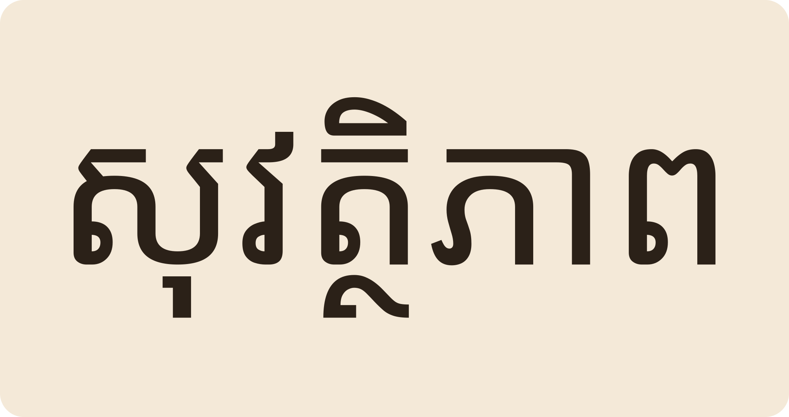
«សុវត្ថិភាពចរាចរណ៍» កើតពីយើងគោរពច្បាប់ និងមានអធ្យាស្រ័យគ្នា។
Road safety comes from obeying the law and yielding to one another.
ទេ។ ស្រៈព្យាង្គដើមត្រូវតម្រួត៖ «កន្លែង» kə-nlaeng ឬខ្លីជាងនេះទៀត។
No — the first vowel is reduced: “kə-nlaeng”, very light.
ខុស។ «់» សម្លាប់ស្រៈចុងព្យាង្គ «្» (ជើង) ភ្ជាប់ព្យញ្ជនៈពីរក្នុងព្យាង្គតែមួយ។
Different: ់ kills a final vowel; ្ links two consonants inside one beat.
«កង់» (មេរៀន ៤) vs «កង្កែប» (មេរៀន ៦)។
ការអត់ឱនឱ្យគ្នាទៅវិញទៅមក។ នៅលើផ្លូវ គឺបង្រួមឱ្យគេ។
Mutual tolerance — on the road, giving way to others.
«ប្រុងប្រយ័ត្នផង!» កុំធ្វេសប្រហែស។
“Be careful!” — don't be careless.
ទេ។ «ជញ្ជូន» to send/transmit «ជញ្ជីង» a scale។ រៀនជាពីរពាក្យដាច់។
No: ជញ្ជូন = to send, ជញ្ជីង = weighing scale. Learn them apart.
Tap a word's play button to hear it. Hide one side, then recall it before you tap to check.
«កន្លែង» place។ «ន» តូចនៅក្រោម «ក» ព្យាង្គដើមអានខ្លី k-។ «ចង្កៀង» oil lamp។ អាន chɑng-ieng ព្យាង្គដើមស្រាល។
កន្លែង “place”: the first beat shrinks to a bare k-. ចង្កៀង “oil lamp” — light first beat, strong second.
«កង្កែប» frog។ «មីងខែយកជញ្ជីងថ្លឹងកង្កែបលក់នៅផ្សារ»។ «ជញ្ជីង» scale។ ជើងពីរ «ញ» និង «ជ» តម្រួតព្យាង្គដើម។ «បង្កង» prawn។ «ចែថាទិញបង្កង និងបង្គាយកទៅអាំង»។ «អង្គុយ» to sit (polite)។ អង្គុយស្តាប់គ្រូក្នុងថ្នាក់។
កង្កែប “frog”. Aunti Kae weighs frogs on a scale at the market. ជញ្ជីង “scale” — TWO stacked subscripts shrink the first beat. បង្កង “prawn”. Auntie buys prawns and shrimp to grill. អង្គុយ “to sit” (polite). Sit and listen to the teacher.
«ចរាចរណ៍» traffic។ ការធ្វើដំណើរទៅមកតាមផ្លូវ។ «សុវត្ថិភាពចរាចរណ៍» កើតពីយើងគោរពច្បាប់ និងមានអធ្យាស្រ័យគ្នា។
ចរាចរណ៍ “traffic” — travelling to and fro on the roads. Road safety comes from obeying the law and yielding to one another.
Q. «កន្លែង» អាន «កន-លែង» ទេ?
Q. Is កន្លែង read kɑn-laeng?
A. ទេ។ ស្រៈព្យាង្គដើមត្រូវតម្រួត៖ «កន្លែង» kə-nlaeng ឬខ្លីជាងនេះទៀត។
A. No — the first vowel is reduced: “kə-nlaeng”, very light.
Q. «់» និង «្» ដូចគ្នាទេ?
Q. Are ់ and ្ the same thing?
A. ខុស។ «់» សម្លាប់ស្រៈចុងព្យាង្គ «្» (ជើង) ភ្ជាប់ព្យញ្ជនៈពីរក្នុងព្យាង្គតែមួយ។
A. Different: ់ kills a final vowel; ្ links two consonants inside one beat.
Q. «អធ្យាស្រ័យ» ន័យអ្វី?
Q. What does អធ្យាស្រ័យ mean?
A. ការអត់ឱនឱ្យគ្នាទៅវិញទៅមក។ នៅលើផ្លូវ គឺបង្រួមឱ្យគេ។
A. Mutual tolerance — on the road, giving way to others.
Q. «ប្រុងប្រយ័ត្ន» ប្រើដូចម្តេច?
Q. How do I use ប្រុងប្រយ័ត្ន?
A. «ប្រុងប្រយ័ត្នផង!» កុំធ្វេសប្រហែស។
A. “Be careful!” — don't be careless.
Q. «ជញ្ជូន» និង «ជញ្ជីង» ដូចគ្នាទេ?
Q. Are ជញ្ជូន and ជញ្ជីង related?
A. ទេ។ «ជញ្ជូន» to send/transmit «ជញ្ជីង» a scale។ រៀនជាពីរពាក្យដាច់។
A. No: ជញ្ជូন = to send, ជញ្ជីង = weighing scale. Learn them apart.
ប្រុងប្រយ័ត្នផ្លូវផង។
Watch out on the road.
ខ្ញុំមិនសូវចេះអានផ្លាកសញ្ញាទេ។
I can't read signs well yet.
Say it in your head first, then tap the box to check.